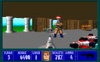

Conflict In The Fatherland
| Release Date | 1999 |
| Number of Levels | 60 |
| New Graphics | Yes |
| New Sounds | Yes |
| New Engine | No |
| Author's Rating | ••••• |
Requires 6-episode registered Wolfenstein to play. |
|
| > Download Now < | |
Conflict In The Fatherland (1999)
CODENAME: BJW60IIWORKING TITLE: THE REVOLUTION
A Triumph of Classical Design.
Serving as a follow-up to my first map set, Conflict In The Fatherland proves that I learned a lot from my first 60 levels. The overall design and atmosphere is a significant improvement from The Renovation, with greater attention to detail paid to each level than to an entire episode in my previous set. This is, quite simply, a triumph of classical design, created by a Wolfenstein purist for fellow purists at heart.
Widely regarded as my best work, CITF takes the player through six episodes of Nazi-blasting fun, touring locales such as an SS training center, Giftmacher's subterranean bunker and a weapons manufacturing plant. The stories are relatively unchanged from the originals (with the exception of episode one), but each has a slightly different twist.
This add-on includes some new graphics and sound effects. The brownshirted SA receive red Nazi armbands, SS officers wear the traditional black uniforms, and the deaths of each guard have been made gorier. There are new weapon sound effects, new SA death sounds (voiced by yours truly), a new design for the chaingun, and the addition of a couple of new sprites and wall textures (most notably the red ceiling light, which received a lot of use).
For those who still consider id Software's original 60 maps as the pinnacle of Wolfenstein level design, Conflict In The Fatherland is right up your alley. It's a custom level set that's true to the masters in every way, and is likely to earn a spot on your favorites list.
Four Years in the Making.
Work unofficially began in 1994. After failing to double the number of levels in The Renovation by the Wolfmaster deadline, I instead rolled the best of my extra creations over into this, an all-new mapset. Originally, this collection was to be called The Revolution, as an obvious play on the name of my first add-on, The Renovation. The similarity was meant to underscore the relationship between the two. It wasn't until I had already finished three or four episodes that I decided to change the name to the more appropriate Conflict In The Fatherland.
Development continued throughout 1995, and I estimate that I finished the final level sometime in the first half of 1996 (no records exist to prove this timeline). I did not, however, have any specific plans for a release. Carlton Griffin, the man behind Wolfmaster, spoke to me a few times about his preliminary plans for assembling a "sequel collection," or a second Wolfmaster — but his failing health, and the public's waning interest in Wolfenstein, were complicating his efforts. Eventually I lost contact with him.
Over the next several years, I tested Conflict In The Fatherland simply by playing and enjoying its levels. I had designed this add-on for myself and my own enjoyment, and it had accomplished its goal. Thoughts of a public release were no longer on my mind.
After going off to college in late 1998, I began to get into web design more seriously, and discovered an entire online community of gamers who were still playing Wolfenstein. With my interest in the game rekindled, I realized that two things had just come together: I had found an audience for CITF, and my web design skills would help me deliver it to them. And so, in 1999, Conflict In The Fatherland was finally turned loose, three years after completion.
By then, the terrific online Wolfenstein community had already shown me how to successfully recompile the Wolfenstein source code, a feat I had unsuccessfully attempted repeatedly since its release in 1995. And so, as CITF hit the 'net, work was already well underway on my next add-on: Project Totengraeber.
Untold Secrets.
- Although I finished episode two early on, I was never completely satisfied with many of its levels. In fact, I felt the first five were actually inferior to those in episode two of The Renovation. I eventually decided to redesign them, and the result was a much better episode overall. Unfortunately, while the original floors were backed up, I later lost them to a hard drive failure.
- Episode four, "Subterranean Terror," was originally the name of an add-on I had planned for Spear of Destiny in 1994. When work on CITF began accelerating, I abandoned the Spear add-on and appropriated its levels. They became the beginnings of CITF episode four, which took on the same name.
- In 1995, I made a series of audio cassettes entited Wolfenstein Modified Sound Extravaganzas, wherein I essentially recorded myself playing early versions of CITF (as well as some other add-ons by Warren Buss and David Huntoon). These tapes helped me test the voices I had recorded for the game actors, but mostly they were just random fun.
- In 1996, I began work on a hint book for CITF, done in the same style as the original hint book for Wolfenstein 3-D (complete with identically-designed maps, sidebar commentary and lame jokes). Page layout was done with CorelDRAW 6, and the first four episodes were completed. After that point, I abandoned the hint book for lack of interest. But I'm sure I still have the files around here somewhere...